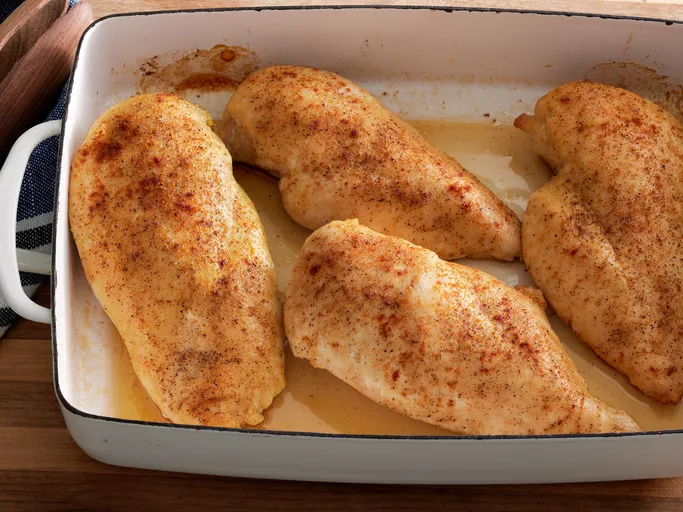

Chicken Breasts

Description
Learn how to bake chicken that's tender, juicy, and perfect every time with this simple, 5-ingredient recipe for boneless, skinless chicken breasts. Adding just a bit of chicken broth to those beautiful pan drippings creates a tasty pan sauce that adds extra flavor at the table.
Ingredients
- Chicken Breasts
Of course, you'll need chicken breasts. This recipe calls for four skinless, boneless chicken breast halves.
- Olive Oil
Olive oil provides moisture and prevents the chicken breasts from drying out. It also helps the chicken cook more evenly.
- Salt
Use your favorite coarse sea salt for the most delicious results.
- Creole Seasoning
Creole seasoning adds flavor and a bit of welcome heat.
- Chicken Broth
You'll use chicken broth to make an easy pan sauce to pour over the baked chicken.